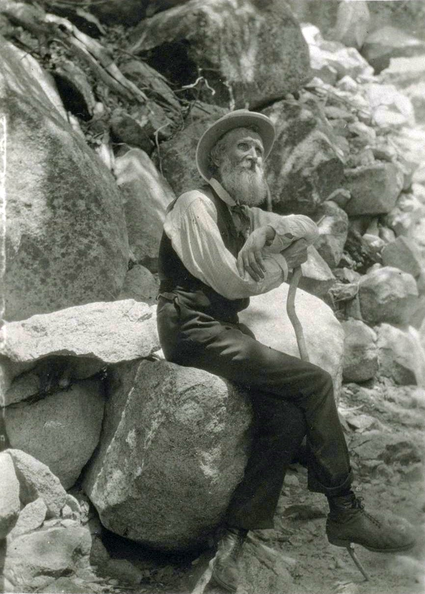

After taking steamship passage from New York via Panama, John Muir arrived in San Francisco, California in 1868. Upon arrival, Muir immediately traveled to Yosemite for a week, a place he'd only read about.
He noted, at first glance, that, "he was overwhelmed by the landscape, scrambling down steep cliff faces to get a closer look at the waterfalls, whooping and howling at the vistas, jumping tirelessly from flower to flower."
Muir later served as a shepherd in Yosemite valley, climbed a number of the mountains there and hiked down old Indian trails. He designed mills, built cabins and most of all, wrote letters and stories in his journal.